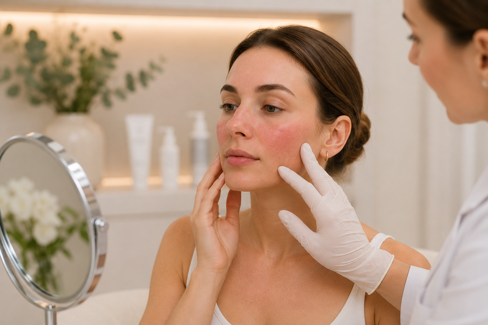
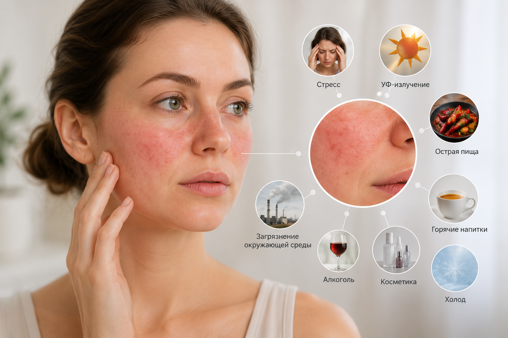
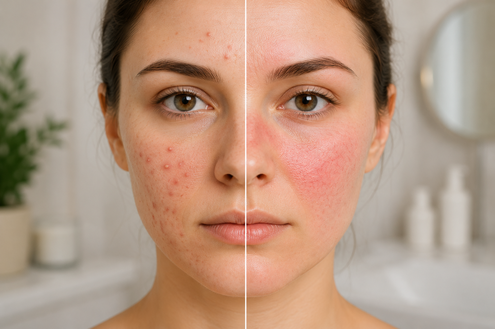
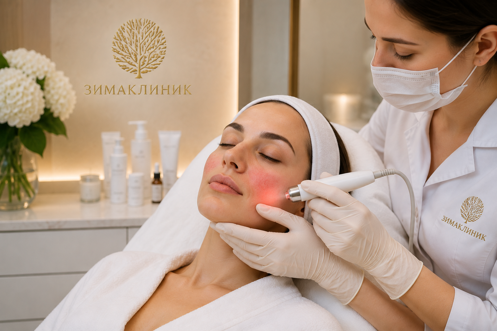

Розацеа: почему появляется покраснение кожи и как его лечить?
Постоянное покраснение лица, расширенные сосуды, ощущение жара и периодические воспаления могут быть не просто особенностью чувствительной кожи, а проявлением хронического заболевания — розацеа. Эта патология чаще всего развивается после 30 лет и без своевременного лечения может постепенно прогрессировать.
Современная косметология в Севастополе позволяет эффективно контролировать заболевание, уменьшить выраженность симптомов и значительно улучшить качество кожи. Розацеа относится к хроническим воспалительным заболеваниям кожи лица и требует комплексного подхода к диагностике и лечению.
В ЗимаКлиник лечение розацеа начинается с консультации врача и поиска причины обострений. Для каждого пациента составляется индивидуальный план терапии, который может включать аппаратные процедуры, домашний уход и рекомендации по образу жизни. Такой комплексный подход является одним из принципов работы клиники.

Что такое розацеа?
Розацеа — хроническое заболевание кожи, при котором преимущественно страдает центральная часть лица: щеки, нос, подбородок и лоб.
На ранних этапах покраснение появляется периодически и быстро проходит. Со временем сосуды становятся более заметными, краснота сохраняется дольше, а затем могут присоединиться воспалительные элементы, напоминающие акне.
Главная особенность розацеа заключается в том, что заболевание не проходит самостоятельно и требует лечения под наблюдением специалиста.
Почему развивается розацеа?
Точные причины заболевания до конца не установлены. Специалисты считают, что развитие розацеа связано сразу с несколькими факторами.
-
К ним относятся:
- наследственная предрасположенность;
- повышенная чувствительность сосудов;
- хроническое воспаление кожи;
- воздействие ультрафиолета;
- резкие перепады температуры;
- стресс;
- употребление алкоголя и очень горячей пищи;
- неправильный уход за чувствительной кожей.
У каждого пациента провоцирующие факторы могут отличаться, поэтому лечение всегда подбирается индивидуально.

Симптомы розацеа
У некоторых пациентов заболевание может сопровождаться поражением глаз — сухостью, жжением и раздражением. В таких случаях требуется консультация профильного специалиста.
-
Наиболее характерными признаками заболевания являются:
- стойкое покраснение лица;
- ощущение жара и приливов;
- расширенные сосуды (купероз);
- повышенная чувствительность кожи;
- воспалительные элементы и гнойнички;
- сухость, шелушение и чувство стянутости.
Чем розацеа отличается от акне?
Несмотря на внешнее сходство, это разные заболевания.
При акне основной причиной являются закупорка пор и повышенная выработка кожного сала. При розацеа ведущую роль играют сосудистые изменения и хроническое воспаление кожи.
Еще одно отличие — при розацеа отсутствуют классические черные точки (комедоны), характерные для угревой болезни.
Именно поэтому использовать средства от акне при розацеа без назначения врача не рекомендуется — они могут усилить раздражение кожи.

Как лечат розацеа?
Современное лечение всегда подбирается индивидуально и зависит от стадии заболевания.
-
В ЗимаКлиник могут использоваться:
- аппаратные методики для уменьшения сосудистой сетки и покраснения;
- профессиональные уходовые процедуры;
- индивидуально подобранный домашний уход;
- рекомендации по образу жизни и профилактике обострений.
В клинике представлены современные направления аппаратной и эстетической косметологии, а также разрабатываются индивидуальные протоколы лечения для каждого пациента.
Можно ли полностью вылечить розацеа?
Розацеа относится к хроническим заболеваниям. Полностью устранить предрасположенность к ней невозможно, однако современные методы позволяют добиться длительной ремиссии, значительно уменьшить покраснение, сократить количество обострений и улучшить качество кожи.
Наилучшие результаты достигаются при раннем обращении к врачу и соблюдении всех рекомендаций специалиста.
Как предотвратить обострение?
-
Чтобы снизить риск появления новых симптомов, специалисты рекомендуют:
- ежедневно использовать солнцезащитные средства;
- избегать перегрева кожи;
- отказаться от агрессивных косметических средств;
- умываться теплой, а не горячей водой;
- ограничить продукты и напитки, провоцирующие приливы;
- использовать домашний уход, рекомендованный врачом.
Такие меры помогают поддерживать кожу в стабильном состоянии и продлить период ремиссии.
Лечение розацеа в ЗимаКлиник
Если вас беспокоит постоянное покраснение лица, сосудистая сетка или воспалительные элементы, не откладывайте визит к специалисту. В ЗимаКлиник врач-косметолог проведет диагностику, определит стадию заболевания и подберет персональную программу лечения.
Комплексный подход, современные аппаратные методики и индивидуальные протоколы позволяют эффективно контролировать проявления розацеа и вернуть коже здоровый внешний вид.
